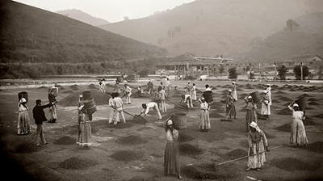
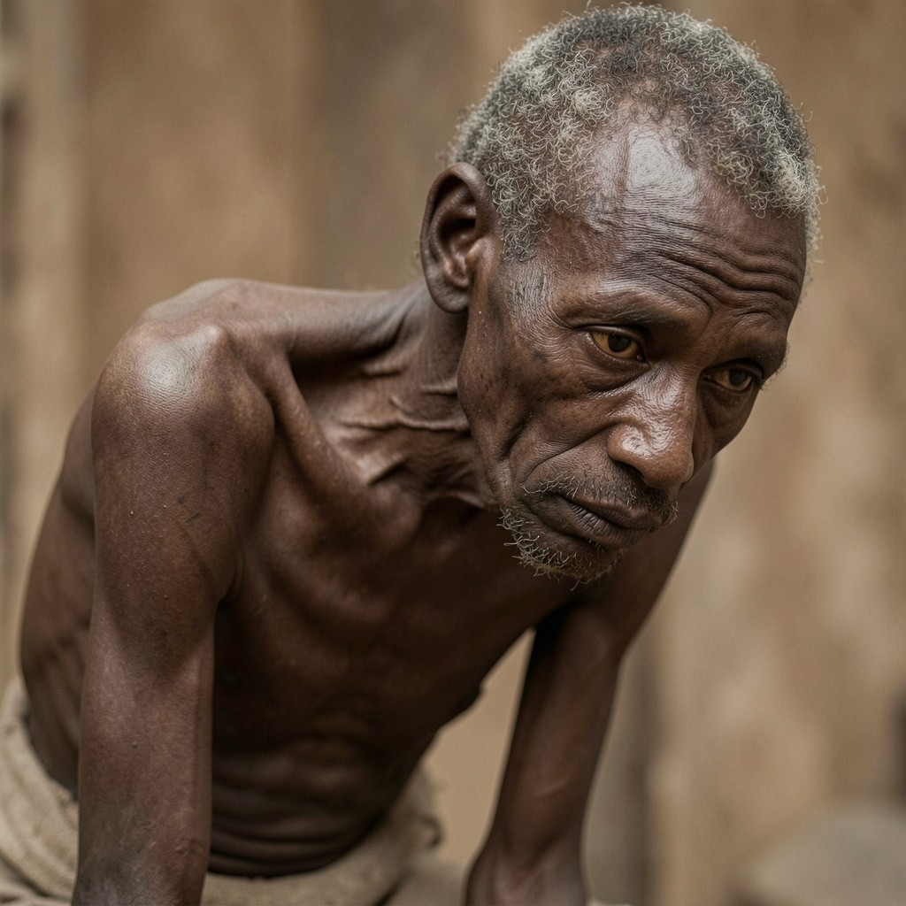

Melhor Escravo (50 Pratas)
Apresenta musculatura extremamente hipertrofiada, voltada para o ápice da força bruta e da explosão. Foca em tarefas de impacto extremo, como mover grandes blocos, toras ou operar maquinário pesado. Apresenta um ritmo de alta intensidade que exige pausas para recuperação devido ao alto gasto energético.
Nossos Escravos (10/25/35/50 Pratas)
Perfil Debilitado possui desgaste severo, limitando-se a tarefas manuais leves e estáticas que exigem ritmo lento. O Intermediário Inicial compensa a pouca força com agilidade e flexibilidade, mantendo grande constância em trabalhos de velocidade.O Intermediário Avançado equilibra musculatura sólida e alta resistência, suportando longas e contínuas jornadas de esforço pesado.O Perfil de Força Máxima entrega explosão muscular extrema para tarefas brutas, exigindo pausas para recuperação. imagem ilustra perfeitamente essa progressão funcional baseada no desenvolvimento físico de cada um.
Pior escravo (10 Pratas)
Apresenta desgaste físico severo, limitando drasticamente a força e a resistência para tarefas braçais. Foca em atividades leves, artesanais ou estáticas que exigem o mínimo de esforço muscular direto.Apresenta um ritmo lento e necessita de pausas frequentes devido à baixa reserva de energia corporal.

Funcionamento: Terça a Domingo, das 18h às 23h. Av. Principal, 123.